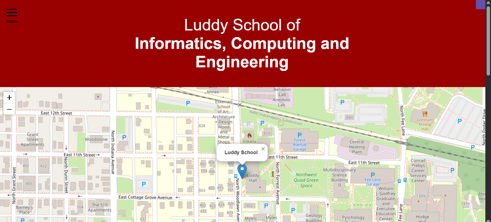

Recreating Luddy Homepage
Description
A front-end project where I recreated the homepage of the Luddy School of Informatics, using HTML, CSS, Bootstrap, and JavaScript. This project focused on replicating layout structure, styling, and interactive elements to match the original site’s functionality and design.
Key focuses:
- Applied core HTML and CSS principles for structure and styling
- Used Bootstrap to ensure responsive design and component consistency
- Added interactivity through JavaScript for the navigation and an interactive campus map
- Focused on accuracy, layout replication, and user-friendly design
Tools/Resources Used
- Html
- CSS
- Javascript
- Bootstrap